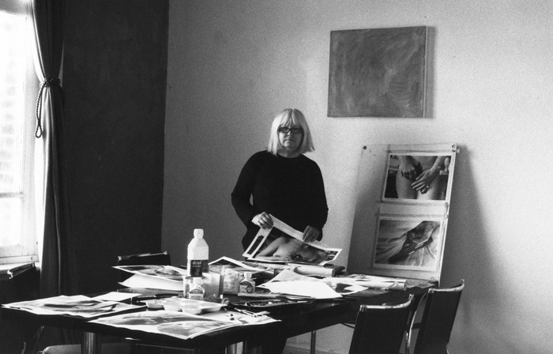
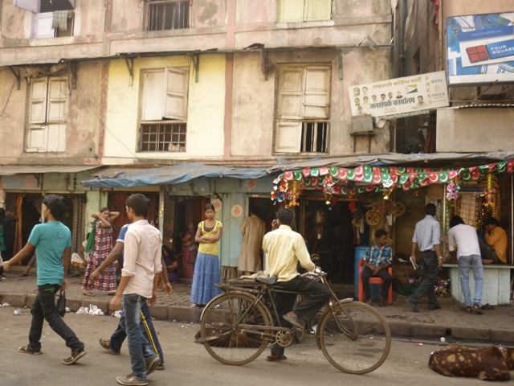
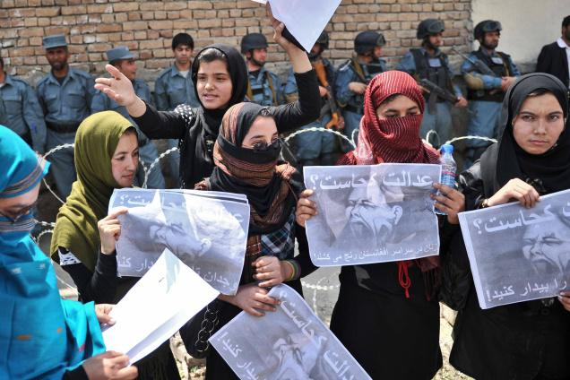
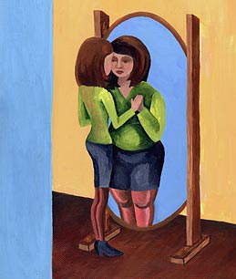

مقالههاى اين بخش
- 16 خرداد 1392
مهاجرت و آسيب شناسي آن براى زنان و كودكان
- 24 اردیبهشت 1392

مصاحبه ماری امیلی فورنیاکس با الکسیس هانتر ،هنرمند فمینیست
ترجمه : رها عسکری زاده
- 14 اردیبهشت 1392

- 11 اردیبهشت 1392

- 3 فروردین 1392
- 25 اسفند 1391
- 25 اسفند 1391
- 19 اسفند 1391

- 18 اسفند 1391
- 18 اسفند 1391
- 17 اسفند 1391

- 4 اسفند 1391
- 17 بهمن 1391
- 13 بهمن 1391
- 3 بهمن 1391
- 24 دی 1391

- 24 دی 1391
- 15 دی 1391
- 28 آذر 1391
- 25 آذر 1391

اعتقاد به اتوپیا زنان را به جنگ کشاند
- 18 آذر 1391
- 6 آذر 1391

ناهید میرحاج
- 6 آذر 1391

- 30 آبان 1391

با یاد نسرین ستوده که بیشتر از یک ماه است در اعتصاب غذاست
- 27 آبان 1391
- 19 مهر 1391

ژان بریر - ترجمه: لیلا گلشن
- 3 مهر 1391
- 28 شهریور 1391

الاین سالتزبرگ ـ جان کلیسلر/ ترجمه: گلناز ملک
- 21 مرداد 1391
- 19 مرداد 1391
| 30 | | | | | | | | ... |